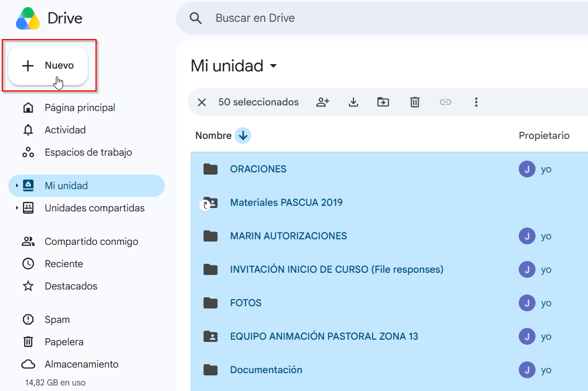
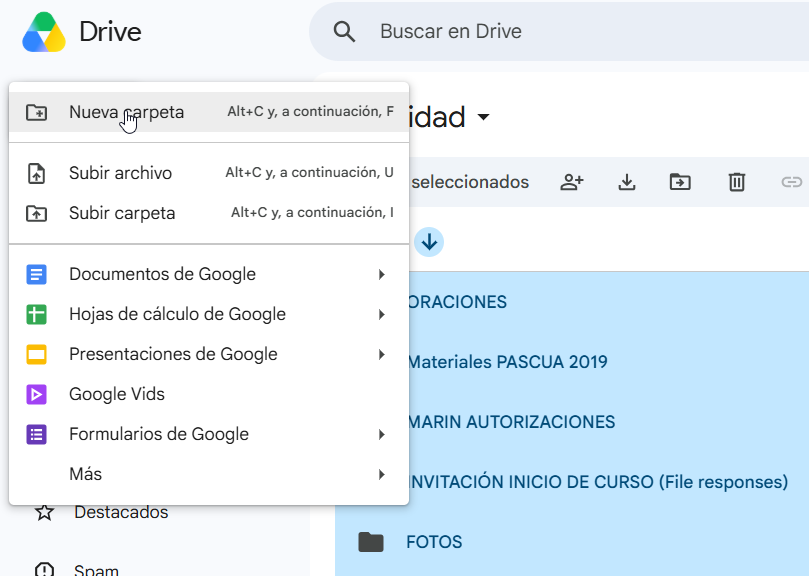
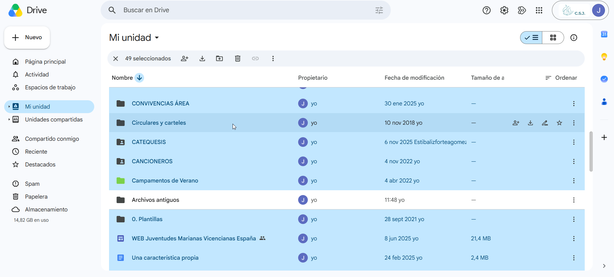
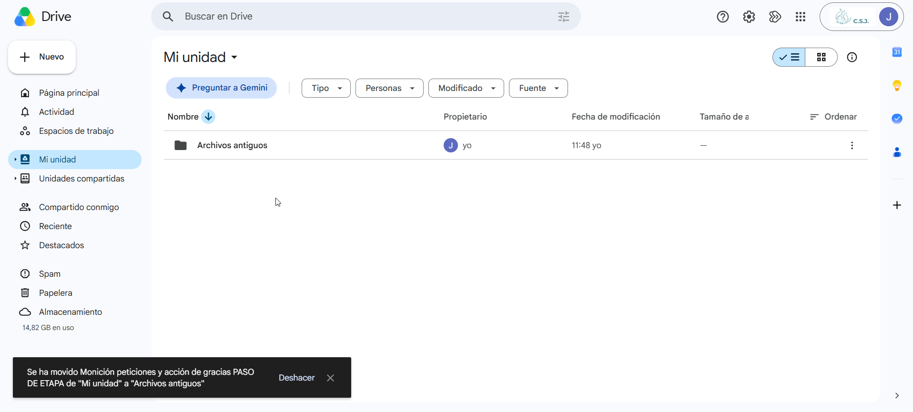
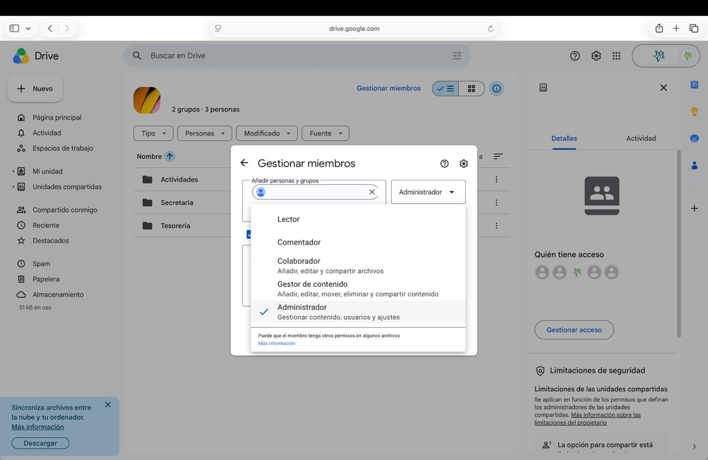
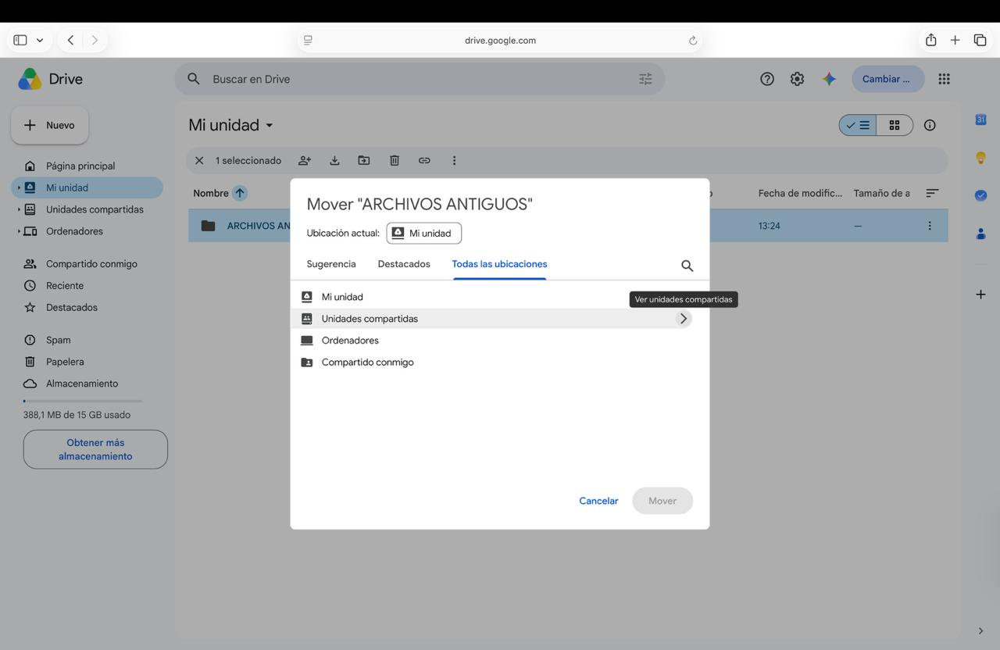
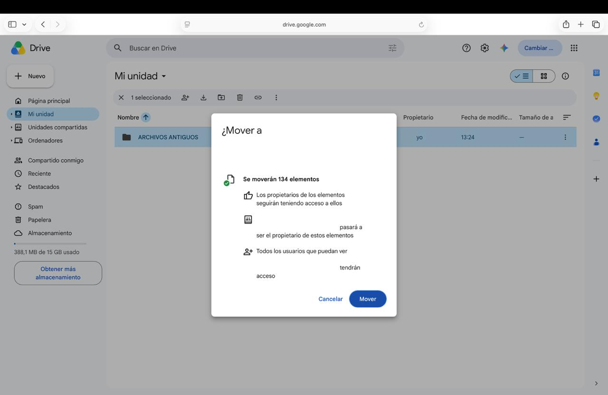
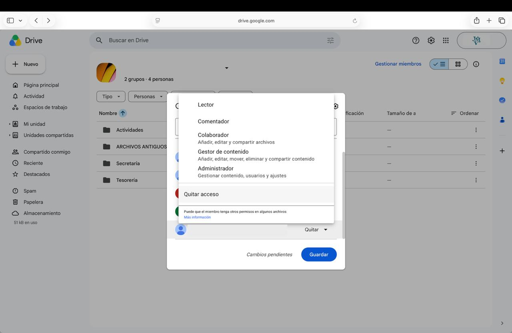

Migra tu antigua nube sin descargar nada
Esta guía se apoya en cómo funcionan las unidades compartidas: lo que hay dentro de ellas no pertenece a ninguna persona, sino a la organización. Así que basta con mover tu carpeta antigua dentro de la unidad compartida de tu centro: en cuanto entra, la propiedad pasa a JMV España automáticamente.
De esta forma, no hace falta descargar nada, no se sube nada, se conserva la estructura de carpetas tal cual está y los documentos de Google siguen siendo documentos de Google.
Antes de empezar
- Hazlo desde un ordenador, no desde el móvil.
- Vas a ir saltando entre las dos cuentas. Es mucho más cómodo tener la
antigua abierta en una ventana normal y la nueva
@jmvesp.orgen una ventana de incógnito, en vez de estar cerrando sesión todo el rato. - Ten a mano la dirección exacta de tu correo de centro
(
MICENTRO@jmvesp.org).
1. Ordena tu Drive antiguo en una sola carpeta
En tu cuenta antigua:
- Crea una carpeta en "Mi unidad" llamada Archivos antiguos.


- Selecciona todos los ficheros de "Mi unidad" con Ctrl + A y arrástralos dentro de "Archivos antiguos". Si mantienes pulsado Ctrl y haces clic sobre "Archivos antiguos", la deseleccionas para no meter la carpeta dentro de sí misma.

- Repite hasta que en "Mi unidad" solo quede la carpeta Archivos antiguos.

Aprovecha para hacer limpieza
Este es el mejor momento para no migrar lo que ya no sirve. Todo lo que dejes fuera es trabajo que te ahorras ahora y desorden que te ahorras después.
Lo que hay en “Compartido conmigo” no es tuyo
Si arrastras a "Archivos antiguos" documentos que te compartió otra persona, no se moverán: siguen perteneciendo a quien los creó y Drive no puede cambiarles el propietario. No pasa nada por intentarlo —Drive te dará después la lista de los que se han quedado fuera— pero si ya sabes cuáles son, déjalos aparte y te ahorras el repaso del paso 4.
2. Da acceso de Administrador a tu cuenta antigua
Ahora, desde tu cuenta corporativa @jmvesp.org:
- Abre Drive y entra en Unidades compartidas → la unidad compartida de tu centro.
- Pulsa sobre el nombre de la unidad arriba del todo y elige Gestionar miembros.
- Escribe la dirección de tu cuenta antigua de Gmail.
- En el desplegable de la derecha, elige Administrador.
- Pulsa Enviar.

Al hacer estas capturas sobre un Drive real, tapa antes de subirlas nombres de socios, correos personales y nombres de archivo con datos identificables: esta web es pública. Lo tienes explicado en Subir imágenes.
Esto es un permiso temporal, y hay que retirarlo
Mientras dure la migración, esa cuenta personal puede ver, mover y borrar todo lo que haya en la unidad compartida del centro, incluidos los datos de socios y de menores. Por eso el paso 6 de esta guía es quitárselo, y no es opcional.
3. Mueve la carpeta entera
Vuelve a tu cuenta antigua. Ahora verás en su Drive, en el menú de la izquierda, la sección Unidades compartidas con la unidad de tu centro.
- Haz clic con el botón derecho sobre la carpeta Archivos antiguos y elige Organizar → Mover.
- Elige la unidad compartida de tu centro como destino y confirma con Mover.
- Drive te avisará de que el propietario de los archivos va a cambiar y de que la acción no se puede deshacer. Es exactamente lo que buscamos: acepta.


Con muchos archivos tarda un rato
Puedes cerrar la pestaña: el movimiento sigue en los servidores de Google aunque apagues el ordenador.
Drive no mueve más de 100.000 elementos de una vez. Si tu Drive es más grande que eso, no muevas "Archivos antiguos" entera: entra dentro y ve moviendo sus subcarpetas una a una.
4. Revisa la lista de lo que no se ha podido mover
Cuando termina, Drive te dice si algo se ha quedado fuera y te ofrece
descargar la lista en un archivo .csv.
Ahí están los archivos que Drive no ha movido, que casi siempre son de un solo tipo: documentos que pertenecen a otra persona y que solo estaban compartidos contigo. En su sitio, Drive deja un acceso directo, que es solo un atajo al archivo original, no una copia.
📸 Falta captura: el aviso final de Drive con el enlace para descargar la lista de archivos no movidos. Guardar como
docs/assets/img/migrar-nube-sin-descargas/04.png.
Qué hacer con ellos, en Archivos que no se pudieron mover.
Si una carpeta entera se ha negado a moverse
Cuando dentro de una carpeta hay demasiados archivos de otras personas —25 o más, o más de uno de cada diez—, Drive no mueve la carpeta entera, no solo esos archivos.
La solución: crea en tu Mi unidad una carpeta aparte, llamada por ejemplo "De otras personas", mueve ahí los archivos que aparecen en la lista, y repite el paso 3 con la carpeta que se había quedado atrás.
5. Ordena el contenido en su sitio
Ya está todo dentro de la unidad compartida y es propiedad de JMV España. Ahora, desde la cuenta corporativa, colócalo donde toca: Secretaría, Tesorería y Actividades tienen cada una su carpeta, y hay documentos que no deben convivir con los datos de socios.
Lo tienes explicado en Unidades compartidas: qué y para qué y en Protección de datos en Google Drive.
Revisa lo que estuviera compartido por enlace
Las unidades compartidas no permiten enlaces públicos como los de "Mi unidad". Si alguno de esos documentos estaba compartido por enlace con familias o con otros centros, ese enlace dejará de funcionar sin más aviso.
Los documentos realmente públicos —una circular, un cartel— es mejor dejarlos en la "Mi unidad" de la cuenta corporativa. Puedes sacarlos de la unidad compartida moviéndolos, ahora que ya son vuestros.
6. Retira el acceso de Administrador a la cuenta antigua
Este paso cierra la migración. No lo dejes para otro día.
Antes de darlo, comprueba dos cosas:
- Que en la unidad compartida está todo lo que esperabas encontrar.
- Que ya has resuelto los archivos de la lista del paso 4 (o que sabes que no te importan).
Después, desde la cuenta corporativa:
- Unidades compartidas → la unidad de tu centro → Gestionar miembros.
- Busca la dirección de la cuenta antigua.
- En su desplegable, elige Quitar acceso.

Los archivos se quedan donde están: ya no son suyos. Lo único que desaparece es el acceso de una cuenta personal a la unidad de trabajo del centro, que es como debe estar.